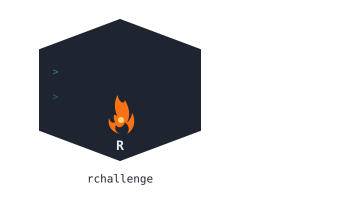

Getting Started with rgrind
getting-started.RmdWhat is rgrind?
rgrind is a package that lets you practice R by solving
small coding puzzles, right inside your own R console. You write a
function, submit it, and the package tells you instantly whether it’s
correct, with a helpful explanation either way.
No website, no sign-up, no internet connection needed once installed. Everything runs locally, on your own machine.
This guide walks you through solving your very first challenge, step by step, assuming you’ve never used the package before.
Step 2: See what challenges are available
list_challenges()
#> [1] "avg_above" "bootstrap_ci" "count_missing"
#> [4] "count_na" "first_duplicate" "max_consecutive_ones"
#> [7] "pivot_long_scores" "remove_outliers" "rolling_sum"
#> [10] "sum_evens"Each of these is a short id you can use to try that specific
challenge. Let’s start with sum_evens. a good first
challenge.
Step 3: Write your own solution
Before submitting anything, you need to write your own R function
that attempts to solve the problem. For sum_evens, the goal
is: given a vector of numbers, add up only the even
ones.
Here’s an attempt:
This is just a normal R function, written and tested however you’d
normally write R code. rgrind doesn’t require any special
syntax , any function that takes the right inputs and returns the right
answer will work.
Step 4: Submit it with run_challenge()
run_challenge("sum_evens", my_solution)
#>
#> ── Sum of Even Numbers ─────────────────────────────────────────────────────────
#> Base R Optimisation • Easy
#>
#> ────────────────────────────────────────────────────────────────────────────────
#> ✖ 6/7 tests passed
#>
#> ── Failed tests
#> ✖ Test 7: Expected 6, got NA_real_
#>
#> ── Hint
#> Think vectorised: `x %% 2 == 0` gives you a logical vector of which elements
#> are even. You can use that directly to subset `x`. Don't forget to handle NA
#> values with na.rm = TRUE in sum().
#> Notice a few things in that output:
- A green checkmark and “All tests passed!” means your function produced the correct answer for every test case tried against it.
- Right after that, an Explanation section shows the idiomatic (best-practice) way to solve this exact problem, useful even when you passed, since there’s often a cleaner or faster approach to learn from.
- A streak line appears too, more on that in the next guide, Tracking Your Progress.
Step 5: What happens when you’re wrong?
Let’s deliberately submit a broken solution, just to see what that looks like:
broken_solution <- function(x) {
sum(x) # forgot to filter for even numbers!
}
run_challenge("sum_evens", broken_solution)
#>
#> ── Sum of Even Numbers ─────────────────────────────────────────────────────────
#> Base R Optimisation • Easy
#>
#> ────────────────────────────────────────────────────────────────────────────────
#> ✖ 2/7 tests passed
#>
#> ── Failed tests
#> ✖ Test 1: Expected 12, got 21
#> ✖ Test 2: Expected 0, got 16
#> ✖ Test 5: Expected -6, got -2
#> ✖ Test 6: Expected 0, got 4
#> ✖ Test 7: Expected 6, got NA_real_
#>
#> ── Hint
#> Think vectorised: `x %% 2 == 0` gives you a logical vector of which elements
#> are even. You can use that directly to subset `x`. Don't forget to handle NA
#> values with na.rm = TRUE in sum().
#> Instead of a checkmark, you’ll see:
- A red summary line showing how many test cases passed out of the total.
- A Failed tests section, showing exactly what was expected versus what your function actually returned, for each failing case.
- A Hint, a nudge in the right direction, without giving away the full answer.
This is completely normal, failing a challenge is part of learning.
Read the hint, adjust your function, and try
run_challenge() again with your updated solution.
Step 6: Try more challenges
Each challenge works exactly the same way: write a function, run
run_challenge("challenge_id", your_function), read the
feedback.
run_challenge("count_na", function(x) sum(is.na(x)))
#>
#> ── Count Missing Values ────────────────────────────────────────────────────────
#> Base R Optimisation • Easy
#>
#> ────────────────────────────────────────────────────────────────────────────────
#> ✔ All 5 tests passed!
#> 🔥 Current streak: 1 day
#>
#> ── Explanation
#> Idiomatic solution: sum(is.na(x)) This is the simplest possible vectorised
#> pattern in R: is.na() builds a logical mask, and summing a logical vector
#> counts the TRUEs. This exact pattern (mask + sum) is the foundation you'll
#> reuse constantly, it's the same idea behind sum_evens, just applied to a
#> different condition.
#> You can explore every available challenge, along with its category
and difficulty, using list_challenges() at any time.
What’s next
Once you’re comfortable solving individual challenges, check out the
Tracking Your Progress guide to
learn about streaks, your solving history, and the activity heatmap, the
parts of rgrind that turn practice into a habit.